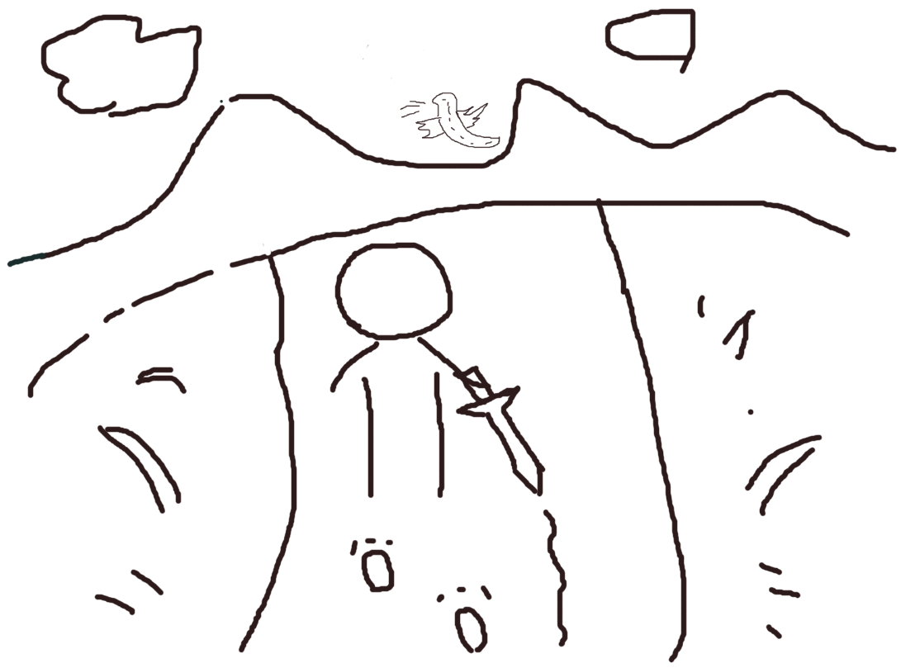

Children are born in the novice village, learning and playing together.
Later, the children gradually grew up and reached the age to leave home. They walked out of the village, facing a bigger world.
Everyone went to the outside world. Some went far away from the village, while others stayed nearby.
They had magical stones that allowed them to keep in touch.
They would contact each other anytime, gossiping about the latest news and discussing the kingdom’s affairs.
On specific dates, they would return to the village to reunite and share updates.
Some worked in nearby towns, some studied in distant towns, and others remained in the village.
One person went very far.
He honed his body and mind at the academy, seeking skilled teachers to learn swordsmanship.
He trained his inner strength and refined his skills.
In the forest, he encountered kind rabbits and fierce wild boars.
He fought through thorns and brambles.
He proved his abilities to the governor and became an adventurer.
He held a sword in his hand.
When enemies invaded, he used the sword to slay them.
When facing robbers, he used the sword to protect himself.
More importantly, the sword carried a mission.
Not just the struggles at hand, but also the dragon on the mountain.
This sword was his weapon.
The dragon was his distant goal.
He walked on the road, looking down, thinking about the future.
One day, he returned home, back to the novice village.
He found that everyone was living well, in harmony.
Children with blond hair and pigtails.
Content and happy.
He saw that his friends had good relationships, coming and going.
Happy and pleased.
He thought about his own days and nights.
Thought about his own journeys through wind and rain.
Thought about the sword in his hand.
The only sword he had.
The day of departure came.
He looked back, seeing the peaceful lives.
Looked back, seeing the bustling market.
Looked back, hearing the laughter.
He looked forward.
Only vastness.
Behind him, no one was waiting.
Ahead, no one was waiting either.
He remembered, someone once was willing to wait for him. But he took up the sword and set off alone.
He departed.
He saw his close friends.
Saw the singing birds and fragrant flowers.
Saw his childhood friends.
He turned a blind eye.
Paid no attention.
A friend waved.
Said nothing.
But he was moved.
He departed.
Where to go?
He thought about the mountains and rivers of the past.
Thought about the sun, moon, and stars of the future.
He liked this journey.
Also hated this journey.
He hesitated repeatedly.
Pondered over and over.
Tossed and turned.
Stayed up all night.
Racked his brains.
Tried every means.
Just wanted to ask that friend one question.
“Shall we go together?”
He might even stay.
Just as he was about to speak, he saw his friends happily playing mahjong.
Eating hotpot and singing songs.
No one needed him.
This journey.
No way back.
He liked the sword in his hand.
Also hated the sword in his hand.
